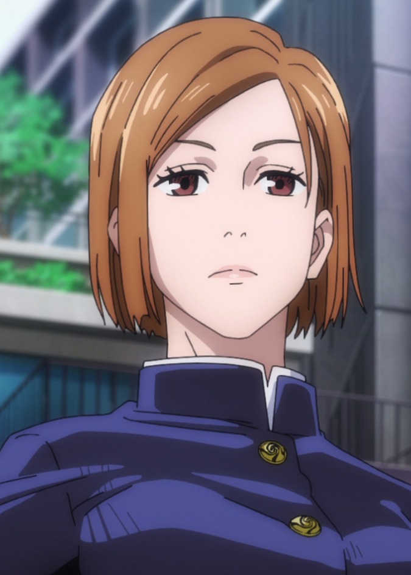
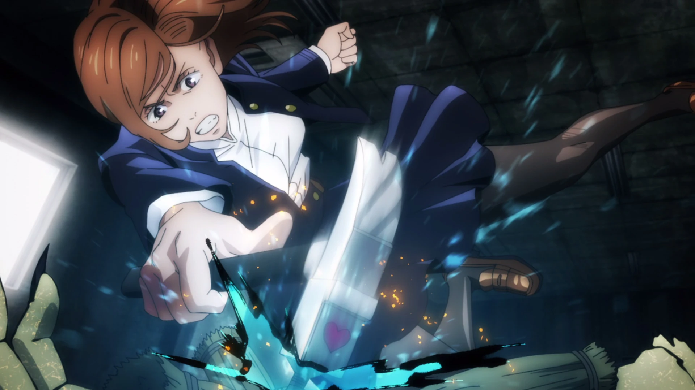
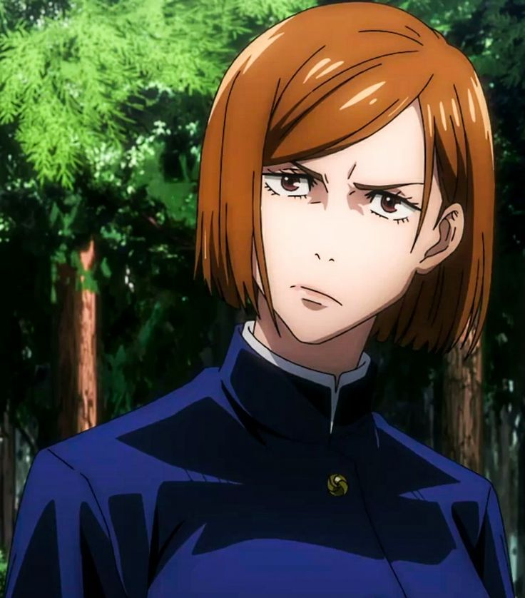
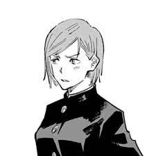
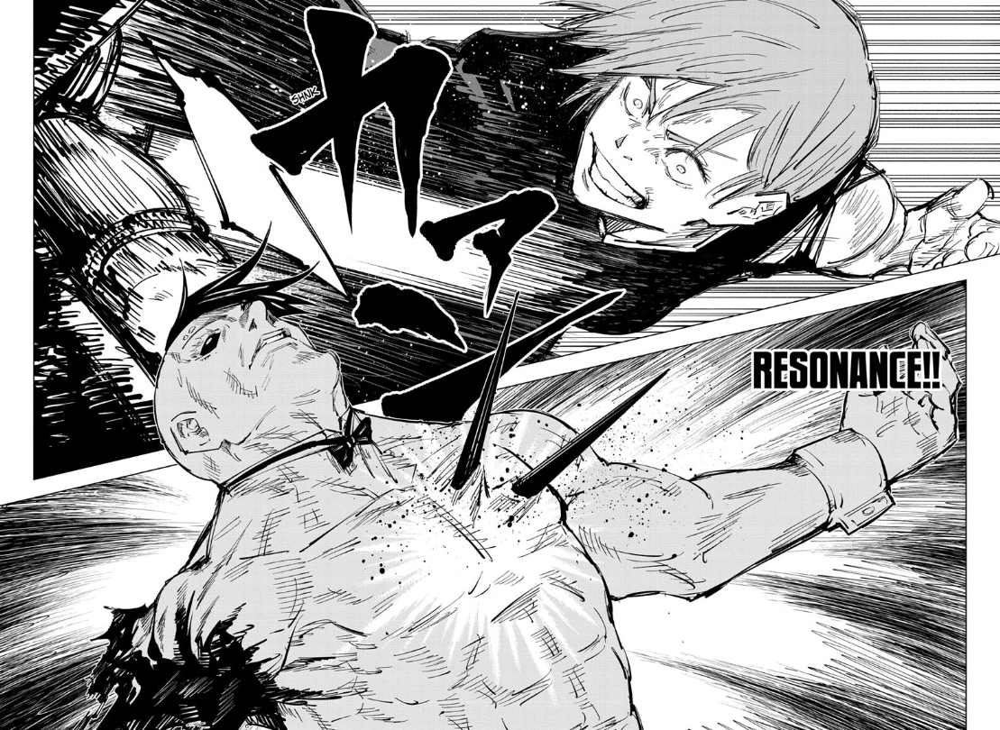

¿Quién es?
Nobara Kugisaki es la hechicera que completa el trío de primer año junto a Itadori y Megumi. Originaria de un pequeño pueblo en Tohoku, decidió mudarse a Tokio para escapar de la mentalidad cerrada de su aldea y reencontrarse con su amiga Saori.
Durante el Incidente de Shibuya, Nobara sufrió una herida devastadora en el rostro causada por Mahito, lo que la mantuvo fuera de combate y en un estado incierto durante la mayor parte del manga. Sin embargo, realizó un regreso triunfal en el clímax de la batalla de Shinjuku, utilizando su técnica de Resonancia para debilitar a Sukuna desde la distancia, permitiendo que Itadori asestara el golpe final.
Al final de la obra, sobrevive y continúa su labor como hechicera, manteniendo su característica cicatriz en el ojo izquierdo como recordatorio de su valentía.
Apariencia

Nobara mide 160 cm y destaca por su cabello naranja (teñido) y ojos del mismo color en el manga, mientras que en el anime se representaron con tonos marrón claro. Su uniforme consiste en una chaqueta oscura de cuello bajo, falda negra y un cinturón de cuero donde guarda su martillo, clavos y muñeco de paja.
Tras su regreso en el capítulo 267, luce un parche en el ojo izquierdo debido a la explosión causada por Mahito, dándole una apariencia más veterana y endurecida en los capítulos finales de la serie.
Personalidad

Es una joven apasionada, honesta y extremadamente orgullosa de su identidad. Nobara rechaza los estereotipos impuestos a las hechiceras, afirmando que no tiene por qué elegir entre ser "guapa" o "fuerte". Es directa, a veces agresiva, pero posee un corazón profundamente leal hacia sus compañeros.
A pesar de su fachada dura y su amor por las compras y el lujo de la ciudad, está dispuesta a sacrificar su vida sin dudarlo para salvar a otros, demostrando una madurez emocional que a menudo sorprende a sus enemigos.
Habilidades
Resonancia
Establece un vínculo entre un muñeco vudú y el enemigo usando partes de este último. El daño al muñeco se transfiere directamente al alma del objetivo.

Horquilla (Kanzashi)
Imbuye sus clavos con energía maldita para que exploten violentamente al impactar o tras una orden.
Destello Negro
Nobara es capaz de ejecutar el Destello Negro, habiéndolo logrado durante su combate contra las Pinturas de la Muerte.
Técnica de Muñeco Vudú
Heredada de su abuela, es una técnica versátil que permite atacar desde largas distancias con gran precisión.
Herramientas Malditas
Utiliza un martillo de hierro y clavos imbuidos en energía para combate cercano y medio alcance.
Apoyo en Shinjuku
Su uso del último dedo de Sukuna para aplicar Resonancia fue la clave definitiva para la victoria de Itadori.
Imágenes de Nobara



Curiosidades
Cumpleaños
7 Ago
Edad
16 años
Marca favorita
Balenciaga
- ▸ Sus marcas favoritas son Balenciaga y Onitsuka Tiger.
- ▸ Akutami afirma que Nobara es el personaje más fácil de "manejar" del trío principal.
- ▸ Su tipo ideal de hombre es Oda Nobunaga.
- ▸ El nombre Nobara (野薔薇) significa "Rosa Silvestre", reflejando su naturaleza espinosa y bella.
- ▸ Le encanta la sandía y todo lo que sea tendencia en la gran ciudad.
Última actualización de esta página: